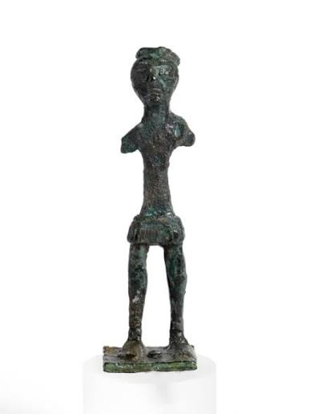

Bronzetto votivo di offerente
Cultura nuragica, secolo a.C.
Figura maschile stante con mantello e la mano destra levata nel gesto del saluto.
- Identificativo
- OGG-0017
- Tipologia
- Scultura
- Autore o ambito
- Cultura nuragica

Cultura nuragica, secolo a.C.
Figura maschile stante con mantello e la mano destra levata nel gesto del saluto.